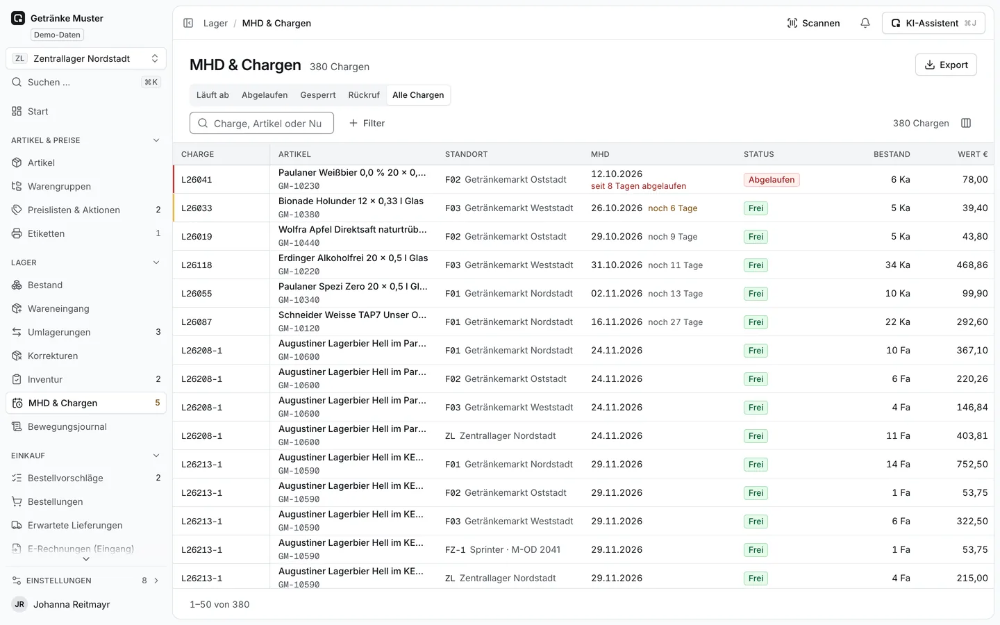

Lager und Bestand
Bestand, der sich aus jeder Bewegung ergibt.
Jeder Zugang und Abgang steht im Bewegungsjournal, der Bestand je Artikel, Standort und Lagerplatz folgt daraus. Lager, Filialen und Fahrzeuge sind Standorte mit eigenem Bestand.
- Chargen und MHD mit Sperre und Rückruf; ablaufende Ware wird nachts erkannt und erscheint morgens als Aufgabe am Standort.
- Umlagerung über den Transit: anfordern, freigeben, versenden, empfangen, Differenz klären.
- Korrekturen nur mit Grund – über Ihrer Freigabegrenze bucht erst eine zweite Person.
- Gebinde wie Kasten und Flasche in einem Artikel, mit Barcodes je Gebinde.
